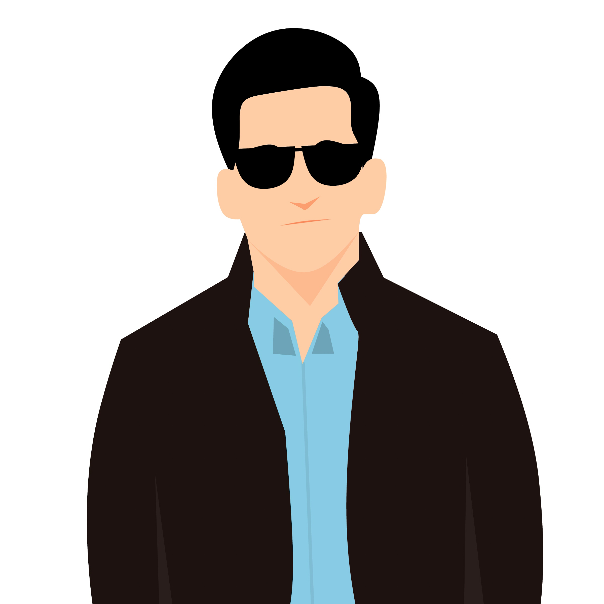

<mat-sidenav-container class="example-container">

  <mat-sidenav opened mode="side" #sidenav [position]="'start'" opened class="sidenav-left" [fixedInViewport]="true"
    [fixedTopGap]="60" [fixedBottomGap]="0">

    <div>
      
      <ul class="list-admin-page">
        <li>
          <div class="item-list" routerLink="/admin/dashboard">
            <span class="material-icons" >home</span>
            <label>Dashboard</label>
          </div>
        </li>
        <li>
          <div class="item-list" routerLink="/admin/users">
            <span class="material-icons">group</span>
            <label>Users</label>
          </div>
        </li>
        <li>
          <div class="item-list" routerLink="/admin/manage">
            <span class="material-icons" >category</span>
            <label>Manage</label>
          </div>
        </li>
      </ul>
    </div>

  </mat-sidenav>
  <!-- <mat-sidenav opened mode="side" position="end">End content</mat-sidenav> -->
  <router-outlet></router-outlet>
</mat-sidenav-container>
